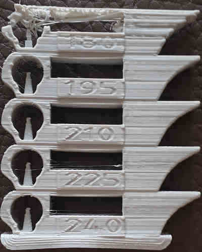

You need to do the bed level calibration before this one, and it's preferable to have also done the flow calibration. This calibration will help you to choose the right temperature with respect of bonding, overhangs and ooze. Note that this test is dependant of the cooling you selected. You can print this multiple times with more or less cooling to find your perfect spot.
This test will print a tower of prints printed with a different temperature for each floor. The "middle" one will be printed with the current temperature selected in your filament configuration. The first item, on the build plate will be the hottest and the higher will be the coolest. You can choose the delta of temperature between each test and the number of tests (how many tests below the current temperature, and how many tests hotter than the current) but you can let them as-is to begun.
The goal is to choose the highest temperature that doesn't produce artifacts.
First, you have to analyse the tower. Each floor has the temperature written on it.
|  |
|
Here, you can see that the 210 degree is the hottest we can print without problems (at least not heat-dependant, bad quality is due to high speed). Also, i succeed to break (with difficulty) a chunk of the 195 degree, so it's a bit too cold.
Finally, you want to tear it apart to see if the lower temperature doesn't have adverse effect on layer bonding. It should be impossible to tear it apart with your own hands. If a floor can be easily broken, then this floor temperature is definitely too low (or you put too much cooling = fan are blowing too hard), so you should choose a higher temperature or try again with less cooling. When trying to break one, don't put your hands on the ends of the tower but on the tested floor and the next one, leaving only the bridge gaps between them.
Change the temperature in your filament setting (extruder -> other layers), then save it. The first layer temperature is often 5°C higher to help with bed adhesion, so you should also change it, especially if it's lower than the new one.
Most of the calibrations need to done is the right order. This one should be the third.
The temperature numbers will only be shown between 180 and 285. Higher or lower values won't be displayed but the test will be conducted successfully, you just have to remember them.
This tower is made with the 3D model created by gaaZolee and available here https://www.thingiverse.com/thing:2729076 with the CC BY-SA 3.0 licence.
Licence for models used for this calibration test: CC BY-SA 3.0